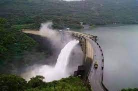
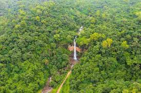
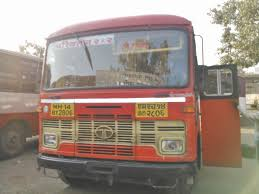

  Radhanagari is a town and the headquarters of Radhanagari tehsil in the Radhanagari subdivision of Kolhapur district in the Indian state of Maharashtra. It is located on the banks of the Bhogawati River, near the Radhanagari Dam and the Radhanagari Wildlife Sanctuary.